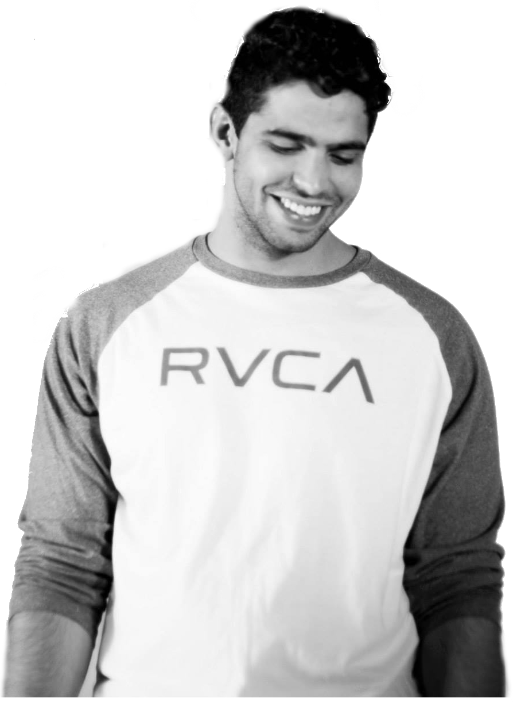

  <div class="col-xs-12 col-md-10 col-centered" ng-init="tog=1" id='homepage'>
  	<div id='homepadding'>
	  		<div class="col-xs-8" id='heading'>
	    	
	    	<p id="snip" class="img-responsive">&nbsp;&nbsp;&nbsp;&nbsp;&nbsp; Randy Grewal is a people's person with a knack for technology. He recieved a Bachelor's Degree in Hydrological Sciences and Policy at UC Santa Barbara, but fell in love with Programming, Web and Graphic Design along the way. Beyond his education, he has experience in Sales and Marketing. His diverse background has taught him how to work well on teams as well as thrive under pressure. His background coupled with his confidence and positive attitude allows him to adapt to all sorts of working environments. Born and raised in California, he loves all kinds of music and a variety of sports. When he isn't working he likes to enjoy a beer with his friends or do something spontaneous.</p>
	    </div>
	    <div class='col-xs-4'></div>
  	</div>    
  </div>
    

